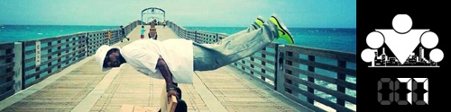

Памятка:
Последний день тренировочной недели, как и всегда, мы посвящаем
развитию гибкости и растяжке. Если кому-то это кажется скучным или ненужным, то поверьте мне, только тот, кто давно не растягивался и потерял гибкость, сможет по-настоящему оценить важность этого занятия ;)
Сегодня я приготовил для вас притчу!
Памятка:
Однажды по пыльной дороге шел путник и за поворотом, на самом солнцепеке, в пыли, увидел человека, тесавшего огромный камень. Человек тесал камень и очень горько плакал.
Путник спросил у него, почему он плачет, и человек сказал, что он самый несчастный на земле и у него самая тяжелая работа на свете. Каждый день он вынужден тесать огромные камни, зарабатывать жалкие гроши, которых едва хватает на то, чтобы кормиться. Путник дал ему монетку и пошел дальше и...
...за следующим поворотом дороги увидел еще одного человека, который тоже тесал огромный камень, но не плакал, а был сосредоточен на работе. И у него путник спросил, что он делает, и каменотес сказал, что работает. Каждый день он приходит на это место и обтесывает свой камень. Это тяжелая работа, но он ей рад, а денег, что ему платят, вполне хватает на то, чтобы прокормить семью. Путник похвалил его, дал монетку и пошел дальше и...
...за следующим поворотом дороги увидел еще одного каменотеса, который в жаре и пыли тесал огромный камень и пел радостную, веселую песню. Путник изумился. "Что ты делаешь?!!" - спросил он. Человек поднял голову, и путник увидел его счастливое лицо.
"Разве ты не видишь ? Я строю храм!"
Так о чём это я вёл речь? Ах да. В общем вчера после убийственного дня, вернувшись поздно домой абсолютно без сил, я понял, что мне совсем не хочется тренироваться.
Обычно я каждый вечер качаю пресс по
этой программе или по какой-нибудь другой, но время от времени нет на это ни сил, ни желание. И хотя я знаю, что тренироваться нужно, что это полезно и всё такое, но всё равно нужна какая-то более серьёзная мотивация для занятий.
В такие моменты я вспоминаю про притчу с храмом. В данном случае храм - это метафора, которая для меня означает мои представления о том, какого результата я хочу достичь. И я представляю, что каждая тренировка - это как бы кирпичек, который я закладываю в свой "храм". И только регулярно закладывая кирпичек за кирпичиком можно достичь поставленной цели. Только так. Но это ещё не всё.
Представленная выше притча отлично показывает, что на самом деле наша жизнь в гораздо большей степени определяется тем, как мы её воспринимаем, а не тем, что есть на самом деле. Как я люблю говорить, из любой ситуации есть 2 выхода, либо ты меняешь ситуацию, либо меняешь своё отношение к ней. Правда обычно я привожу эту идею, рассуждая на тему работы, а не тренировок, но суть от этого не меняется. Если ты хочешь достичь успеха в чём-то, ты должен полюбить это дело, ты должен найти в нём подлинный смысл.
Когда я начинал заниматься воркаутом, то в первую очередь ставил себе в качестве целей силу, красоту (эстетичное телосложение) и здоровье.
Безусловно, это хорошие цели. Но сейчас добавилась ещё одна - я хочу стать примером для других людей и показать, чего можно добиться благодаря воркауту.
Я отлично помню, как меня в своё время впечатлили видео ребят из
Wingate Park. Они не были профессиональными спортсменами или фитнесистами, для них тренировки были чем-то вроде хобби и тренировались они в компании друзей и знакомых в парках по вечерам. Но при этом они были отлично сложены, обладали хорошей силой и проявляли немалую фантазию в плане выполняемых упражнений и комбинаций. И речь идёт не о каких-то сложных или зрелищных упражнениях, а именно об интересных и эффективных. С этих идей и зарождался воркаут, хотя их сейчас многие и подзабыли или даже не знают о них.
В общем, я веду к тому, что вряд ли бы смог заставить себя тренироваться в 12 часов ночи только ради здоровья или силы. Но когда есть цель более высокого порядка, то она заряжает энергией! Рекомендую и вам попробовать найти какую-нибудь более высокую цель для своих тренировок, которая будет давать вам силы тренироваться в моменты их упадка или отсутствия желания.
======> День 78. Продвинутая техника №5